DC Motor Position: Simulink Modeling
Contents
Physical setup
A common actuator in control systems is the DC motor. It directly provides rotary motion and, coupled with wheels or drums and cables, can provide translational motion. The electric circuit of the armature and the free-body diagram of the rotor are shown in the following figure:

The input to the system is the voltage applied to the motor's armature (V), while the output is the angular position of the shaft (theta).
The physical parameters for our example are:
(J) moment of inertia of the rotor 3.2284E-6 kg.m^2
(b) motor viscous friction constant 3.5077E-6 Nms
(Ke) electromotive force constant 0.0274 V/rad/sec
(Kt) motor torque constant 0.0274 Nm/Amp
(R) electric resistance 4 ohm
(L) electric inductance 2.75E-6H
The motor torque is proportional to the armature current i by a constant factor Kt as shown in the relation below.
(1)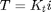
The back emf, e, is proportional to the angular velocity of the shaft by a constant factor Kb.
(2)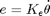
In SI units, the motor torque and back emf constants are equal, that is, K = Kt = Ke.
Building the model with Simulink
This system will be modeled by summing the torques acting on the rotor inertia and integrating the rotor's angular acceleration to give the velocity, and integrating the velocity to get position. Also, Kirchoff's laws will be applied to the armature circuit. First, we will model the integrals of the rotor acceleration and of the rate of change of armature current shown below.
(3)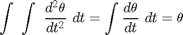
(4)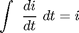
To build the simulation model, open Simulink and open a new model window. Then follow the steps listed below.
- Insert an Integrator block from the Simulink/Continous library and draw lines to and from its input and output terminals.
- Label the input line "d2/dt2(theta)" and the output line "d/dt(theta)" as shown below. To add such a label, double-click in the empty space just above the line.
- Insert another Integrator block attached to the output of the previous one and draw a line from its output terminal.
- Label the output line "theta".
- Insert a third Integrator block above the first one and draw lines to and from its input and output terminals.
- Label the input line "d/dt(i)" and the output line "i".
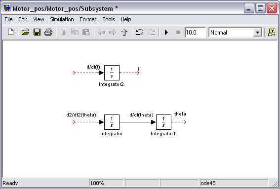
Next, we will apply Newton's law and Kirchoff's law to the motor system to generate the following equations.
(5)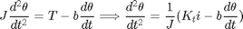
(6)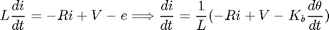
The angular acceleration is equal to 1 / J multiplied by the sum of two terms (one positive, one negative). Similarly, the derivative of current is equal to 1 / L multiplied by the sum of three terms (one positive, two negative). Continuing to model these equations in Simulink, follow the steps given below.
- Insert two Gain blocks from the Simulink/Math Operations library, one attached to each of the leftmost integrators.
- Edit the Gain block corresponding to angular acceleration by double-clicking on it and changing its value to "1/J".
- Change the label of this Gain block to "Inertia" by clicking on the word "Gain" underneath the block.
- Similarly, edit the other Gain's value to "1/L" and it's label to "Inductance".
- Insert two Add blocks from the Simulink/Math Operations library, one attached by a line to each of the Gain blocks.
- Edit the signs of the Add block corresponding to rotation to "+-" since one term is positive and one is negative.
- Edit the signs of the other Add block to "-+-" to represent the signs of the terms in Kirchoff's equation.
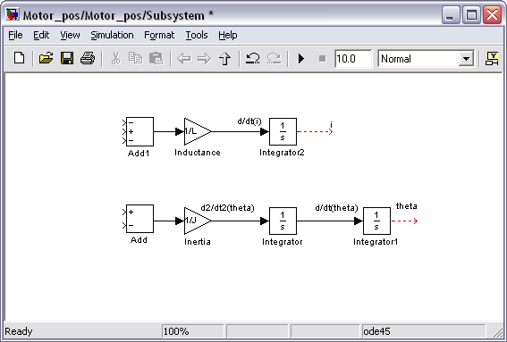
Now, we will add in the torques which are represented in Newton's equation. First, we will add in the damping torque.
- Insert a Gain block below the "Inertia" block, then select it by single-clicking on it. Next select Flip Block from the Format menu (reached by right-clicking) to flip the block from left to right. You can also flip the selected block by holding Ctrl-I.
- Set the Gain value to "b" and rename the block "damping".
- Tap a line (hold Ctrl while drawing or right-click) off the first rotational Integrator's output (d/dt(theta)) and connect it to the input of the damping Gain block.
- Draw a line from the damping Gain output to the negative input of the rotational Add block.
Next, we will add in the torque from the armature.
- Insert a Gain block attached to the positive input of the rotational Add block with a line.
- Edit it's value to "K" to represent the motor constant and label it "Kt".
- Continue drawing the line leading from the current Integrator and connect it to the Kt Gain block.
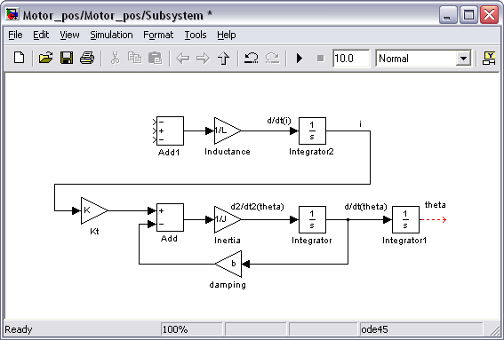
Now, we will add in the voltage terms which are represented in Kirchoff's equation. First, we will add in the voltage drop across the armature resistance.
- Insert a Gain block above the Inductance block and flip it left to right.
- Set the Gain value to "R" and rename this block "Resistance".
- Tap a line off the current Integrator's output and connect it to the input of the Resistance Gain block.
- Draw a line from the Resistance Gain output to the upper negative input of the current equation Add block.
Next, we will add in the back emf from the motor.
- Insert a Gain block and attach it to the other negative input of the current Add block with a line.
- Edit it's value to "K" to represent the motor back emf constant and label it "Ke".
- Tap a line off the first rotational Integrator's output (d/dt(theta)) and connect it to the Ke Gain block.

Now the model is built and we just need to add the voltage input and monitor the position output. We will insert In1 and Out1 ports from the Simulink/Ports & Subsystems library as shown in the following figure so that we may save the motor model as a subsystem.
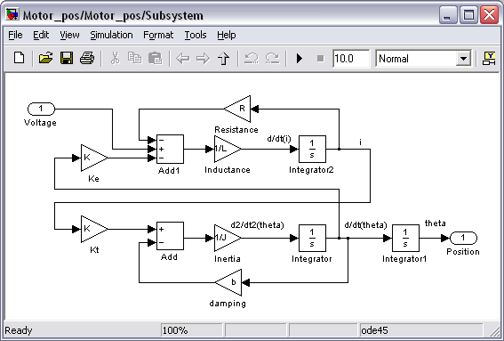
In order to save all of these components as a single subsystem block, first select all of the blocks, then select Create Subsystem from the Edit menu. Name the subsystem "Motor_pos" and then save the model. Your model should appear as follows. You can also download the file for this system here, Motor_Pos.mdl. We use this model in the DC Motor Position: Simulink Controller Design page
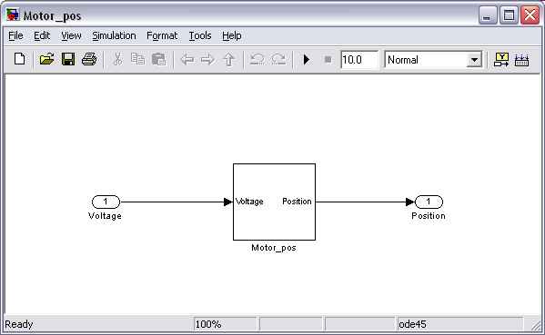
Building the model with Simscape
In this section, we alternatively show how to build the DC Motor model using the physical modeling blocks of the Simscape extension to Simulink. The blocks in the Simscape library represent actual physical components; therefore, complex multi-domain models can be built without the need to build mathematical equations from physical principles as was done above by applying Newton's laws and Kirchoff's laws.
Open a new Simulink model and insert the following list of blocks.
- DC Motor block from the Simscape/SimElectronics/Actuators library
- Current Sensor block from the Simscape/Foundation Library/Electrical/Electrical Sensors library
- Controlled Voltage Source block from the Simscape/Foundation Library/Electrical/Electrical Sources library
- Three PS-Simulink Converter blocks, one Simulink-PS Converter, and a Solver Configuration block from the Simscape/Utilities library
- Electrical Reference block from the Simscape/Foundation Library/Electrical/Electrical Elements library
- Ideal Rotational Motion Sensor block from the Simscape/Foundation Library/Mechanical/Mechanical Sensors library
- Mechanical Rotational Reference block from the Simscape/Foundation Library/Mechanical/Rotational Elements library
- Three Out1 blocks and one In1 block from the Simulink/Ports & Subsystems library
The DC Motor block models both the electrical and mechanical characteristics of the motor. Double-click on the block in order to assign numerical values to the motor's physical parameters. We will specifically define the motor By equivalent circuit parameters as chosen from the Motor Parameterization drop-down menu. Assign the various parameters the following variables and units. We will eventually define these variables at the command line of the MATLAB workspace. Note that since the motor torque constant and the back emf constant are equal if the units are consistent, we only need to define one of the two.
Armature resistance = R [Ohm]
Armature inductance = L [H]
Back emf constant = K [V/(rad/s)]
Rotor inertia = J [kg*m^2]
Rotor damping = b [N*m/(rad/s)]
The Ideal Rotational Motion Sensor block represents a device that measures the difference in angular position and angular velocity between two nodes. In this case, we employ the block to measure the position and velocity of the motor shaft as compared to a fixed reference represented by the Mechanical Rotational Reference block.
The Current Sensor block represents another sensor, specifically it measures the current drawn by the motor.
The PS-Simulink blocks convert physical signals to Simulink output signals, while the Simulink-PS block conversely converts a Simulink input signal to a physical signal. These blocks can be employed to convert the Simscape signals, which represent physical quantities with units, to Simulink signals, which don't explicitly have units attached to them. These blocks, in essence, can perform a units conversion between the physical signals and the Simulink signals. In our case, we can leave the units undefined since the input and output of each of the conversion blocks have the same units. In general, the Simscape blockset is employed to model the physical plant, while the Simulink blockset is employed to model the controller.
The Solver Configuration block is employed for defining the details of the numerical solver employed in running the Simscape simulation. We will use the default settings for this block.
Next, connect and label the components so that they appear as in the figure below. Double-click on the lines which are connected to the Out1 blocks and label them "Current", "Position", and "Speed". Also click on the In1 block and label it "Voltage".

We now need to define the parameters used in our simulation. Type the following commands at the prompt of the MATLAB command window.
R = 4; L = 2.75E-6; K = 0.0274; J = 3.2284E-6; b = 3.5077E-6;
You can save these components in a single subsystem with one input and three outputs. Select all of the blocks and then choose Create Subsystem from the Edit menu. Also label the subsystem and signals as shown in the following figure.

You can download the complete model file here, Motor_Pos_Simscape.mdl, but note that you will need the Simscape addition to Simulink in order to run the file.
Building the model through its LTI representation
You can also build the DC motor model in Simulink by importing one of the models we created in MATLAB in the DC Motor Position: System Modeling page. In this page we specifically created a transfer function model and a state-space model, both of which may be imported. A zero-pole-gain format model can also be imported. Recall the following commands used to build a state-space model of the DC motor in MATLAB.
A = [0 1 0
0 -b/J K/J
0 -K/L -R/L];
B = [0 ; 0 ; 1/L];
C = [1 0 0];
D = 0;
This model can then be imported using the LTI System block from the Control System Toolbox library as shown below. This figure demonstrates how the model is defined by entering "ss(A,B,C,D)" into the LTI system variable cell, though the tf and zpk commands could also be employed.
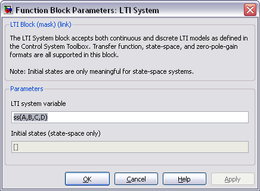
Adding In1 and Out1 ports from the Ports & Subsystems library then creates the model shown below.
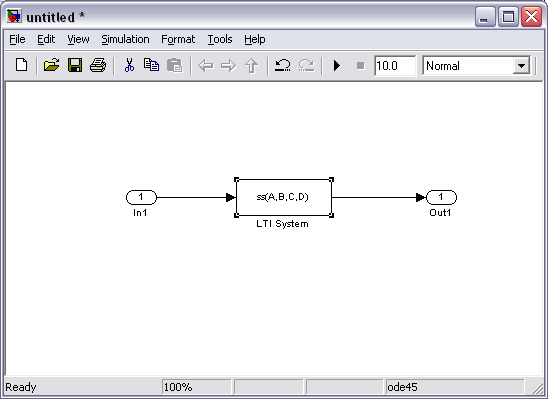
Note that all three of the models generated above will behave equivalently as long as they are built using the same parameter values. The difference between them is then only the ease with which they are built and interfaced with, and how transparent they are in presenting information to the user.